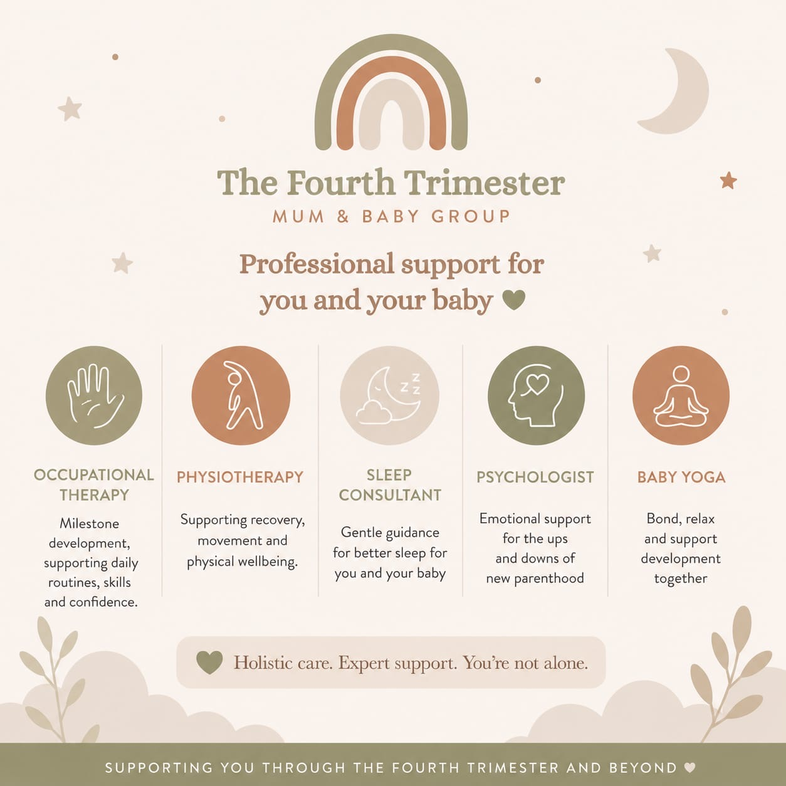

Baby sensory
Simple, gentle play with songs, textures, tummy time ideas, and bonding activities that feel calm rather than overstimulating.
The 10-session programme
A nurturing programme combining baby sensory, professional-led discussion, social mum time, and a final mum-and-baby photoshoot.

Programme modules
Simple, gentle play with songs, textures, tummy time ideas, and bonding activities that feel calm rather than overstimulating.

Helpful conversations around the topics mums often need most, with space for questions and real-life context.

Time to chat, feed, settle, share, and meet other mums without pressure to perform or have everything together.
On the final session, the programme includes a baby and mum photoshoot to capture precious memories together.